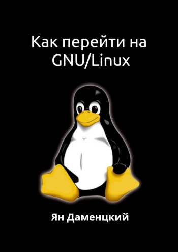

nine1z
Главная
Книги
Статьи
Видео
Курсы
ПО
Книги

Как перейти на GNU/Linux
Ян Даменцкий
Купить
Ozon (бумажная версия)
Litres (электронная версия)
Ridero (электронная версия)
Amazon (электронная версия)
Bookmate (электронная версия)
GNU/Linux — удобная, бесплатная и безопасная операционная система из семейства Unix. Существует убеждение, что GNU/Linux крайне сложен в изучении и использовании. Главная цель этой книги — опровергнуть это. В книге подробно и доступно описан процесс перехода с Microsoft Windows на GNU/Linux. Подробно описаны все нюансы и подводные камни, с которыми пользователи сталкиваются при переходе на эту ОС. Эта книга для тех, кто уже имеет знания о ПК и хочет их расширить.
2020, +12